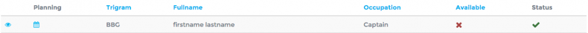
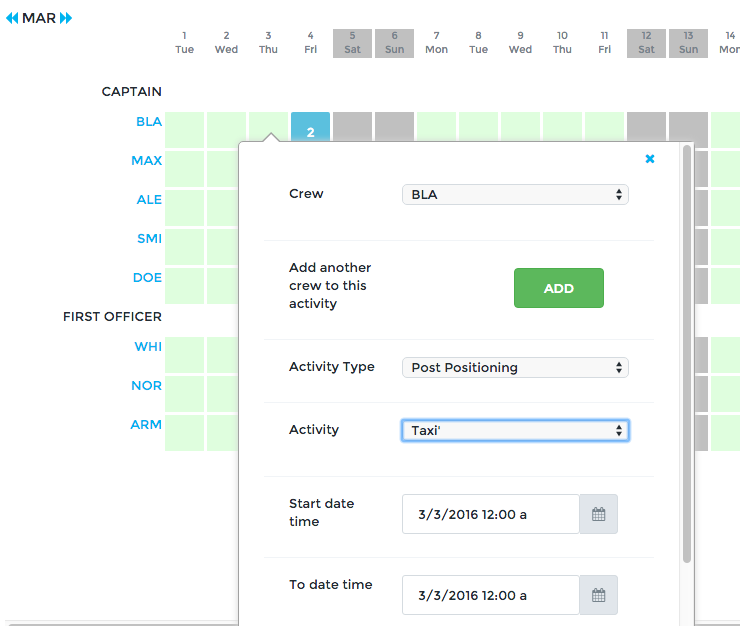
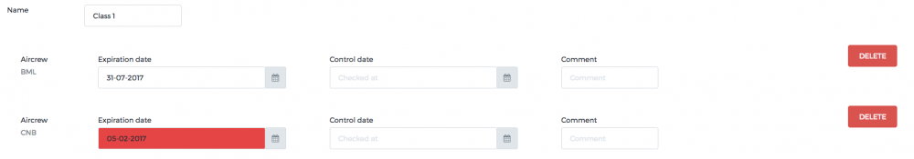
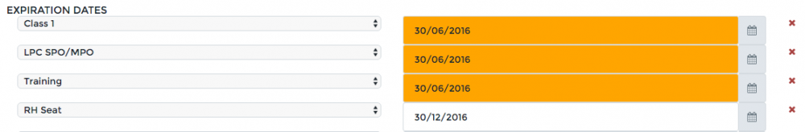
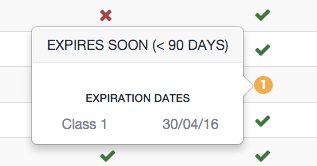

Manage your crews¶
OpenJet 360 offers you a range of tools to manage and monitor your crews.
Adding a new crew¶
- Create crew
Go to Crew > Crew List and click on Create. Fill out the form with at least the mandatory information
- First Name
- Last Name
- Initials is a 3 letter code, used across the operations feature (planning, pairing, flight list) to identify the crew without writing the full name.
- Occupation
- Weight
- Base Airports
- Airport qualifications and expiry dates
Click Save at the bottom right of the window. You have now created a new pilot.
- Create user linked to crew
Refer to User management to link a user to a crew.
- Set pairing
Go to the page Crew > Pairing. This is used to set pairing between two crews (“Who can fly with who”). The vertical scale lists all captains (left seat) and on the horizontal line all captains and first officers (right seat) are listed. Simply click on a cell to set the pairing to OK (green) or Forbidden (red). See Flight Operations for the effects of pairing.
In the same ways, on the page Crew > Pairing Crew/Aircraft you can manage the aircraft qualifications of your crews.
Your crew is now ready for operations.
Planning¶
To access general planning, go to Crew > Planning overview. This customizable page allows you display monthly planning of your crews. To add an activity, simply click on a cell and fill out the form. You should always indicate an airport to and airport from, as the optimization system always needs to know the nearest airport for each crew. Use the button add to add another crew to the same activity.
Activities and activity types are customizable. You can manage proposed activities and activity types in the Configure Menu.
Activity types are given a color used in Crew calendars and planning overview.
Just send a message to support@openet.com should you need to be given rights to administrate Activities and Types.
You can also access individual planning by clicking on in the Flight List or via the Planning button on a crew’s page. Activities can be added or edited on an individual planning in the same way as the team overview planning.
FTL¶
OpenJet monitors your crews based on FAR135.267 regulation or EU-OPS Subpart Q. FTL can be monitored at three different locations:
- Status Sections of a crew’s page to monitor total flight time or total duty time over different periods.
- Flight list via the FTL warning (see Flight Operations)
- Individual Planning for Duty or Rest warnings.
Airport Qualification¶
If you wish to use OpenJet 360 to manage your crew’s Airport Qualification, you must first set an airport as requiring special qualification. Refer to Airports section.
On a crew’s page, simply click on Add Airport Qualification and set an expiration date. This will influence the crew choice and warning panel in the flight list. See Flight Operations for more details.
Expiry dates¶
If you wish to monitor crew’s expiry dates (medical, certificate, recurrent training and checking), you may use the page Crew > Expiry dates. Create your item in the list and add corresponding dates for each pilot:
For each entry, you can add a control date with the initial date of the endorsement for proof check and a comment textfield for an URL link to a remote scan of documents.
You may also set all expiration dates for one particular crew, on her/his crew page and choose alphabetical or chronological order:
The color used:
- Blue: Expires within 90 days.
- Orange: Expires within 30 days.
- Red: Expired.
On the crew list, the “Status” column displays items about to expire with the appropriate color code. Click on the bubble to have details.
The page Crew > Expiration dates also gives you an overview of these items and allows you to easily monitor expiration dates.